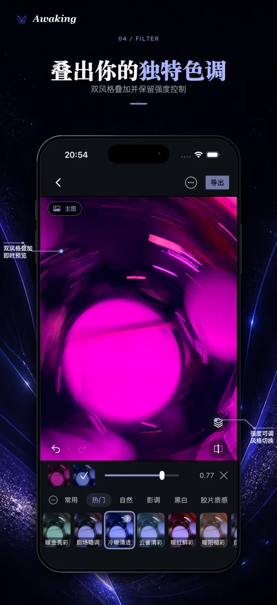
01 · FILTER STACK
叠出自己的色调
并行组合两种滤镜，分别微调强度，让整体风格不被单一预设限制。
On-device photo editor · iPhone & iPad
叠加滤镜、限定局部、管理图层，再把每一步判断完整导出。Awaking 让你先建立整体风格，再把变化放到真正需要的位置。
已在 App Store 上线
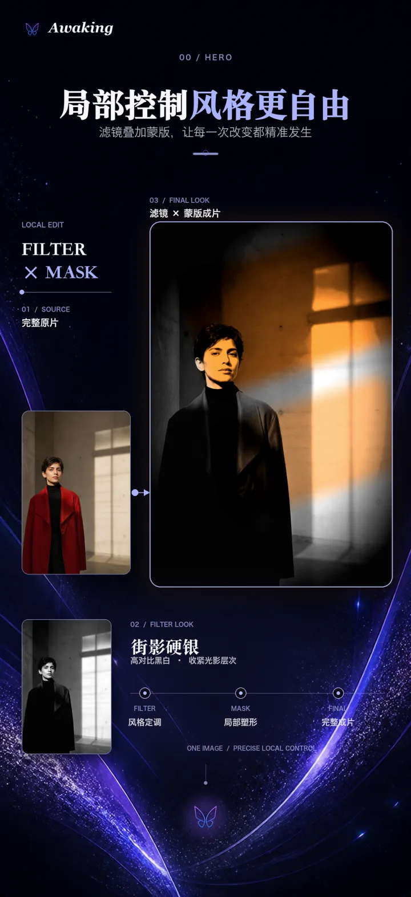
Filter × Mask × Layers
01 · 局部创作
滤镜给出整体方向，蒙版确定变化发生的位置，图层让多个调整仍然有序。它们不是分散的工具，而是一条可以继续修改的创作路径。

并行组合两种滤镜，分别微调强度，让整体风格不被单一预设限制。
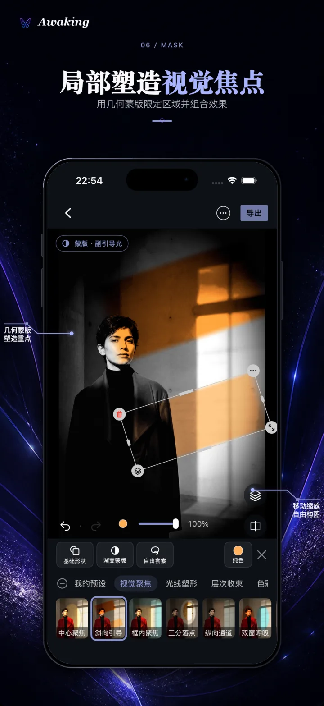
使用形状、渐变、套索等蒙版限定区域，让滤镜和调色只作用于画面的局部。
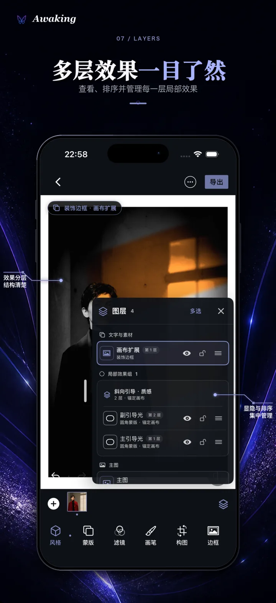
查看、隐藏并整理多个调整的关系，随时回到其中一步继续编辑。
02 · 从哪里开始
Awaking 不只提供空白编辑入口。你可以从首页建立作品，也可以在回忆流里重新看见旧照片、试穿推荐风格，再决定是否继续。
选择照片、进入蒙版设计或浏览灵感，主要创作路径始终靠近第一屏。
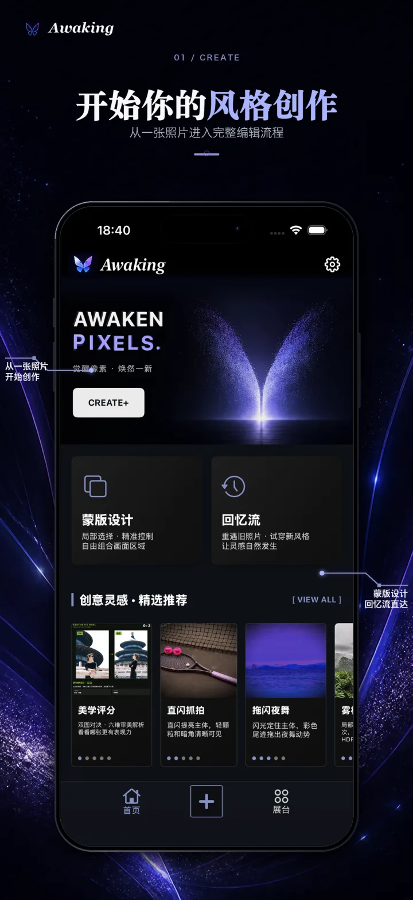
在系统授权范围内本地浏览照片，查看推荐风格；是否加入灵感、继续编辑或离开，都由你决定。
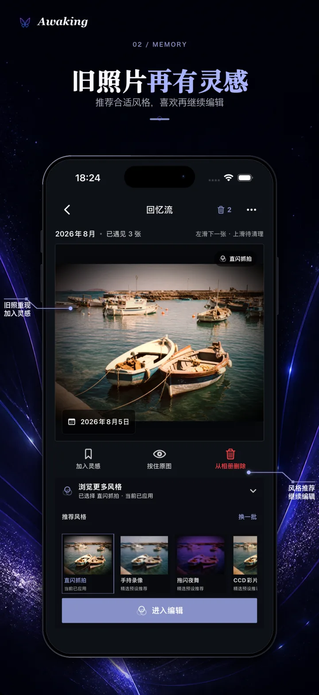
03 · 看见差异
美学对决从六个维度提供创作参考；智能拼接把同一场景中彼此重叠的画面连接起来。结果是辅助，最终判断仍然属于你。
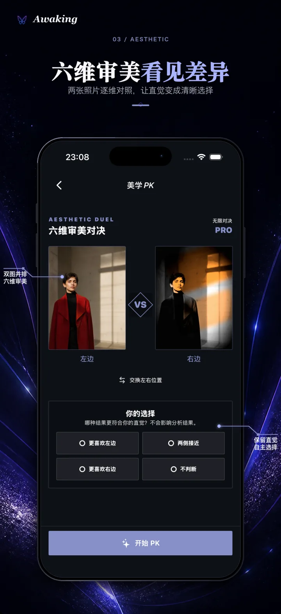
为同一场景、彼此重叠的多张照片自动寻找连接关系。先确认输入条件，再查看拼接结果，原始照片不会因为浏览结果而改变。
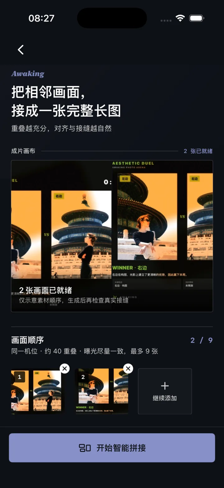
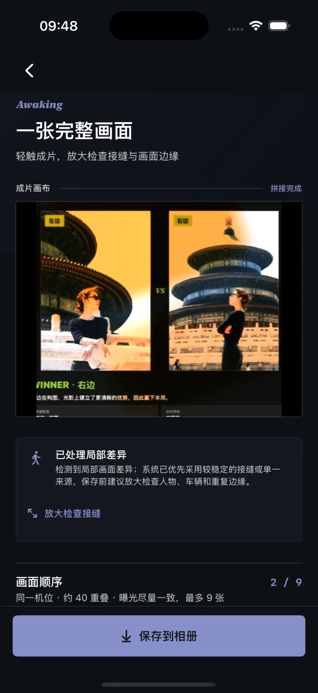
04 · 完整工作流
先快速建立风格，再进入局部控制；随时整理图层和作品状态，最后选择适合结果的导出方式。
从系统相册选择一张照片进入编辑。
从滤镜、预设、调色和构图确定整体方向。
用形状、渐变、套索、导入或画笔蒙版把效果放到局部。
管理图层、草稿与成片，让过程仍可继续。
核对结果，再保存回相册或通过系统分享。
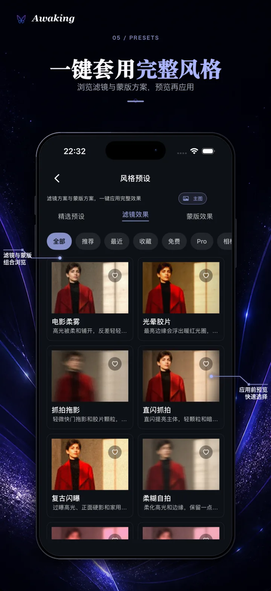
先用预设建立方向，再进入具体参数继续调整。
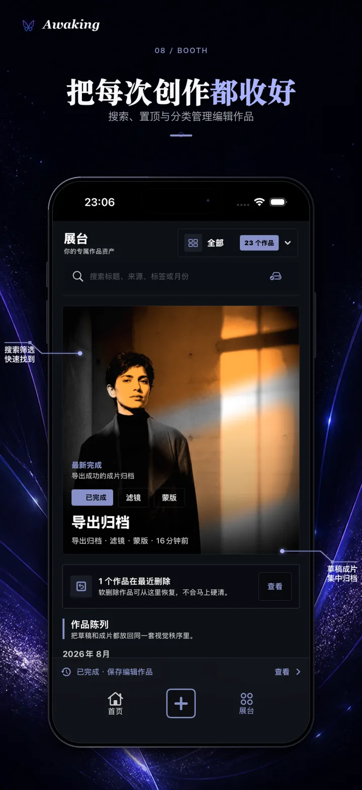
在作品展台查看草稿与成片，也能继续尚未完成的编辑。
免费用户可使用无水印标准 JPEG 导出；Awaking Pro 还可解锁高精 PNG、批量与替换原图等进阶方式。
05 · Free & Pro
基础编辑不是体验版。Awaking Pro 在完整免费链路之上，提供精选高级内容和更专业的导出选择。
无需账号，也不要求先订阅。
通过月度、年度订阅或永久解锁获得同一套 Pro 权益，实际价格与优惠以 Apple 购买页为准。
Awaking · iPhone & iPad
已在 App Store 上线